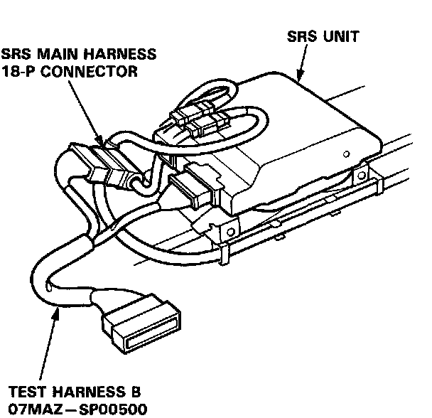
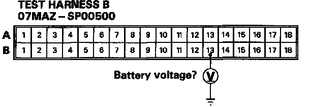

Mode I - Blown SRS No. 1 Fuse, or Open In the Wire
MODE I: BLOWN SRS NO.1 FUSE, OR OPEN IN THE WIRE.1. Check the SRS No.1(10A) fuse in the under-dash fuse box. If it's OK, go to step 2. If it's blown, replace it with a new 10A fuse, then turn the ignition switch ON:
- If fuse doesn't blow, go on to step 2.
- If the fuse blows, troubleshoot as necessary to find the short.
2. Before disconnecting any part of the SRS wire harness, install the short connectors.
3. Connect Test Harness B (O7MAZ-SP00500) between the SRS unit and the SRS main harness 18-P connector.

4. Reconnect the positive and negative cable to the battery.
5. Measure the voltage between the B13 terminal and body ground with the ignition switch ON.

- If there is battery voltage, the SRS unit is faulty. Replace it and recheck the voltages.
- If less than battery voltage, the SRS main harness is faulty. Replace it and recheck the voltages.